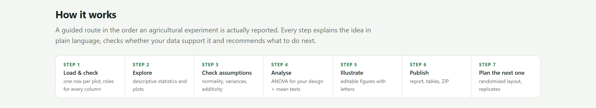
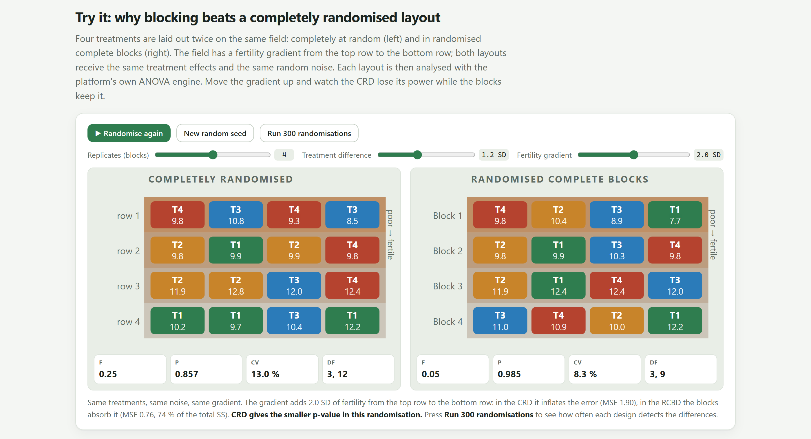
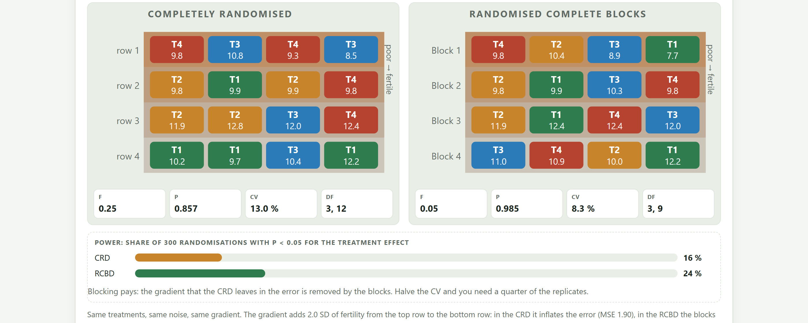
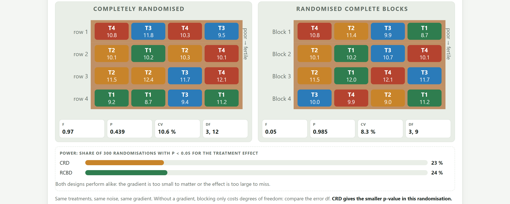
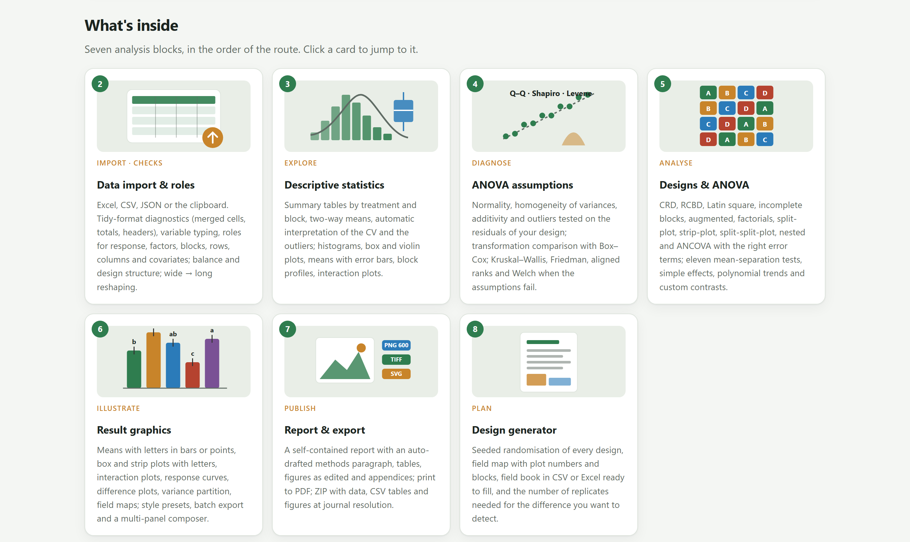
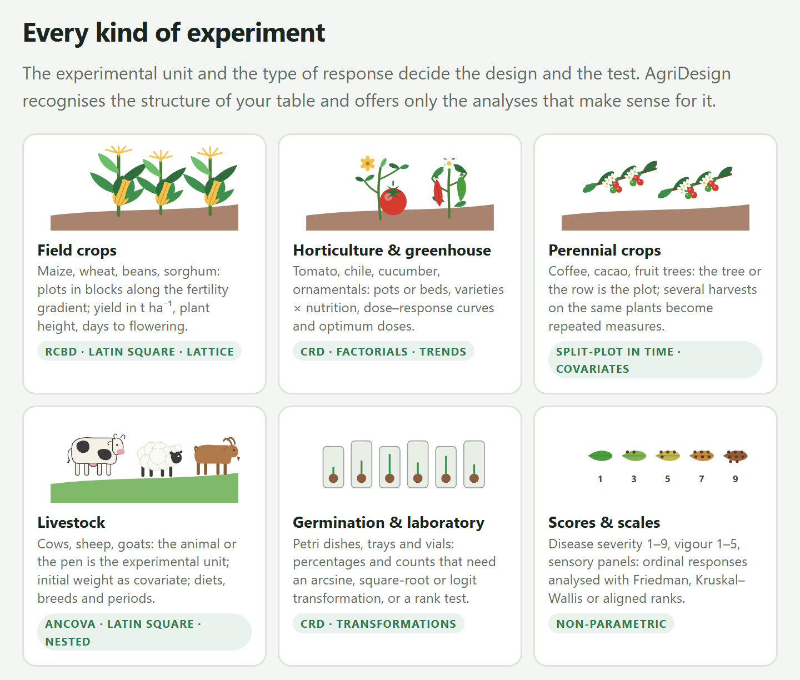
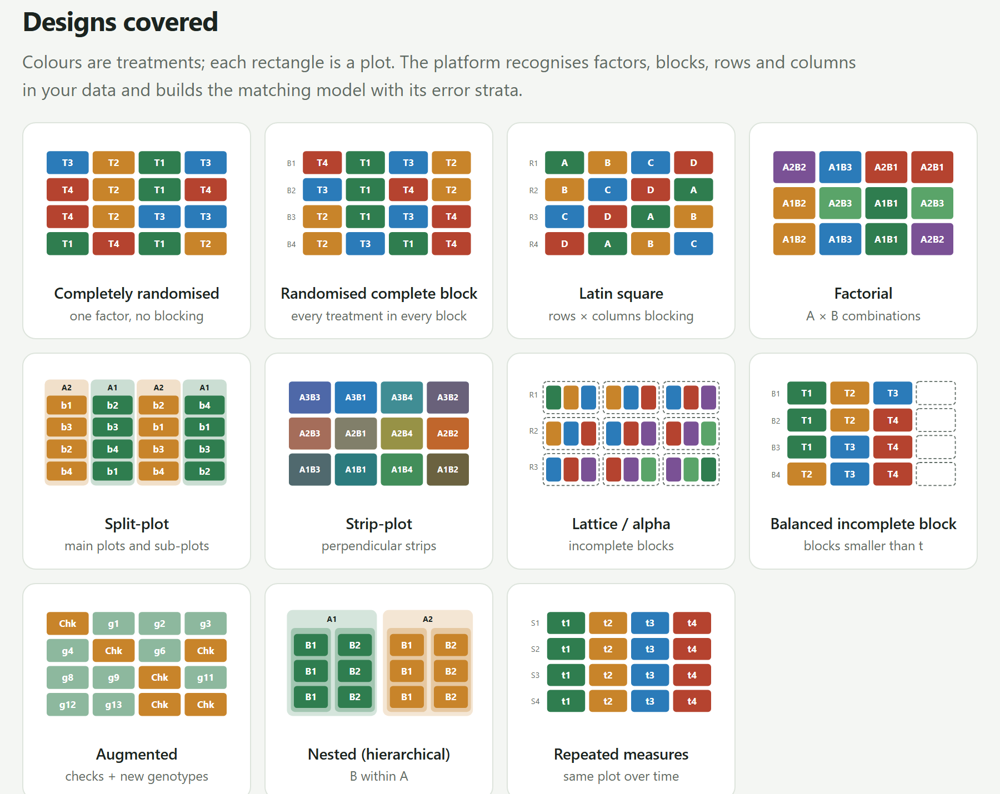
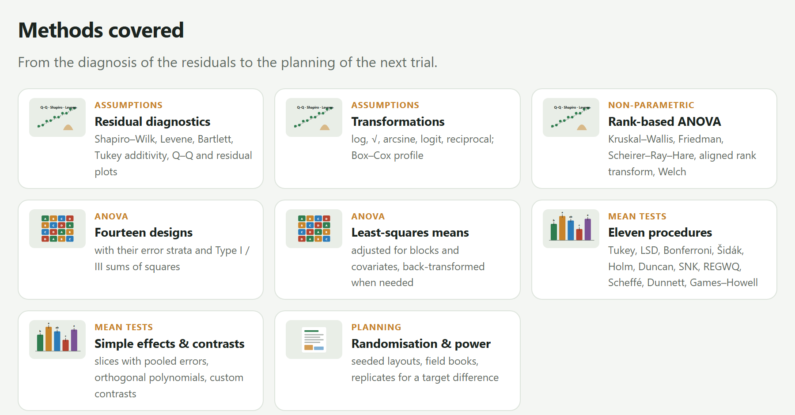
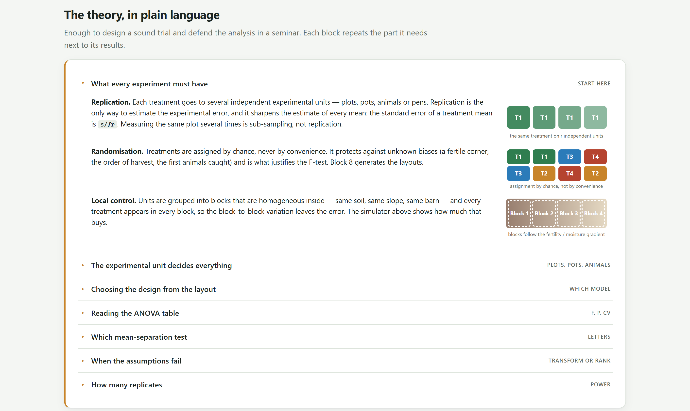
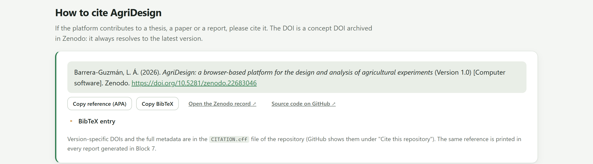

La portada de la app no es solo una página de bienvenida. Es un mapa de todo el programa, un laboratorio donde puedes ver, con el propio motor de ANOVA de la app, cuánto gana un ensayo cuando se bloquea, un catálogo de los diseños y métodos que cubre, y un resumen de la teoría que necesitas para defender el análisis.
Al abrir index.html aparece el Bloque 1. Se lee de arriba abajo, como un folleto: primero qué hace el programa, luego cómo se recorre, después un simulador para experimentar, las galerías de bloques, tipos de ensayo, diseños y métodos, la teoría y, al final, cómo citarlo.
| Sección en la app | Qué contiene | Para qué te sirve |
|---|---|---|
| Presentación cuatro botones y cinco garantías | Start with my data, Try the simulator, Read the theory y How to cite; ilustración de un ensayo en bloques con cultivos y ganado; enlace Open a worked example. | Ir directo a cargar datos, al ejemplo guía o a cualquiera de las secciones de abajo. |
| How it works | Los siete pasos de un ensayo, de la libreta al siguiente ensayo (figura 2.1). | Ubicar cada bloque dentro de la lógica de un experimento. |
| Try it: why blocking beats a completely randomised layout | El simulador de bloques contra azar completo (sección 2.2). | Entender, jugando, qué hace el bloqueo con el error experimental y la potencia. |
| What's inside | Una tarjeta por bloque de análisis, con ilustración y descripción. | Saltar a un bloque con un clic. |
| Every kind of experiment | Seis familias de ensayos y los diseños que suelen corresponderles. | Confirmar que tu experimento cabe en el programa (sección 1.4). |
| Designs covered | Galería de once diseños con su croquis (tabla 2.6). | Reconocer el diseño que sembraste. |
| Methods covered | Ocho tarjetas de métodos agrupados por familia (tabla 2.7). | Ver de un vistazo todo lo que se puede calcular. |
| What it brings together | Las capacidades que reúne el programa en un solo flujo. | Justificar su uso en un proyecto o una tesis. |
| The theory, in plain language | Siete temas desplegables con reglas prácticas (sección 2.4). | Repasar la teoría antes de interpretar o defender resultados. |
| How to cite AgriDesign | La cita del programa en formato APA y BibTeX, lista para copiar (sección 2.5). | Citar correctamente en tu artículo o tesis. |

| Paso | En la app | Qué se hace | Bloques |
|---|---|---|---|
| 1 | Load & check | Cargar la libreta de campo, una fila por parcela, y dar un papel a cada columna. | 2 |
| 2 | Explore | Estadística descriptiva y gráficos exploratorios por tratamiento y bloque. | 3 |
| 3 | Check assumptions | Normalidad, homogeneidad de varianzas y aditividad sobre los residuales; transformar o pasar a rangos. | 4 |
| 4 | Analyse | ANOVA del diseño sembrado, pruebas de medias, tendencias y contrastes. | 5 |
| 5 | Illustrate | Figuras editables con letras, a resolución de revista. | 6 |
| 6 | Publish | Informe, tablas y paquete ZIP. | 7 |
| 7 | Plan the next one | Aleatorización, croquis, libreta y número de repeticiones del siguiente ensayo. | 8 |
Los cuatro botones de la presentación son atajos: Start with my data abre el Bloque 2, y los otros tres bajan hasta el simulador, la teoría o la cita dentro de la misma portada. Las tarjetas de What's inside llevan a su bloque, pero las que necesitan datos permanecen en gris hasta que cargas una tabla; el Bloque 8 está siempre disponible porque planea ensayos que aún no existen. El botón Go to Block 2: load your data al pie de la portada hace lo mismo que el primero.
El simulador responde una pregunta que todo estudiante se hace al menos una vez: ¿para qué bloquear? Siembra dos veces el mismo ensayo de cuatro tratamientos sobre un terreno con gradiente de fertilidad, una vez completamente al azar y otra en bloques completos al azar, analiza ambos acomodos con el mismo motor de ANOVA que usa el Bloque 5 y deja que compares.
Cada parcela produce un rendimiento simulado: 10 + efecto del tratamiento + fertilidad de su fila + ruido. Los cuatro tratamientos tienen efectos escalonados de 0 a δ (T1 el menor, T4 el mayor), la fertilidad crece de la fila superior a la inferior en la cantidad que fija el deslizador, y el ruido es normal con desviación estándar 1. Las unidades de δ y del gradiente son, por tanto, desviaciones estándar del ruido. Los dos acomodos comparten fertilidad y ruido parcela por parcela; solo cambia qué tratamiento cae en cada una. En el azar completo, los 16 tratamientos se sortean sobre todo el terreno; en los bloques, cada fila es un bloque y el sorteo se hace dentro de ella. El ANOVA del acomodo al azar tiene un solo término, el tratamiento; el de bloques tiene además el bloque, y ese término se lleva la variación entre filas.

1 2 3 4 5 6| Deslizador | Intervalo | Significado | Si lo aumentas… |
|---|---|---|---|
| Replicates (blocks) | 2 a 6 | Número de filas del terreno; en el acomodo en bloques, número de bloques. | Más grados de libertad para el error y medias más precisas en los dos acomodos. |
| Treatment difference | 0 a 3 DE | Diferencia entre el mejor y el peor tratamiento, en desviaciones estándar del ruido; los otros dos quedan a tercios. | El efecto es más fácil de detectar. Con 0 no hay efecto y lo que se mide es el error de tipo I. |
| Fertility gradient | 0 a 4 DE | Cuánto más rinde la fila inferior que la superior, en desviaciones estándar del ruido. | El acomodo al azar pierde precisión; el acomodo en bloques no se entera. |
| Tarjeta | Qué es | Cómo leerla |
|---|---|---|
| F | Cociente entre el cuadrado medio de tratamientos y el del error. | Cerca de 1, los tratamientos varían tanto como las parcelas iguales; grande, varían más. |
| p | Valor P del efecto de tratamiento en esa aleatorización. | Menor que 0.05 (resaltado): el acomodo detectó el efecto esta vez. Una sola corrida no dice cuál diseño es mejor; para eso está la potencia. |
| CV | Coeficiente de variación: raíz del cuadrado medio del error entre la media, en porcentaje. | La precisión del ensayo. Es lo primero que cambia al bloquear. |
| df | Grados de libertad del tratamiento y del error. | Los bloques cuestan r − 1 grados de libertad del error: 12 contra 9 con cuatro repeticiones. |
En la aleatorización de la figura 2.2 ninguno de los dos acomodos detectó el efecto (P = 0.857 y P = 0.985), y en esa corrida el acomodo al azar dio incluso el valor P menor. Es normal: con una diferencia de 1.2 desviaciones estándar repartida en cuatro tratamientos, el efecto es pequeño y el azar de una sola corrida manda. Lo que distingue a los diseños es la frecuencia con que detectan el efecto en muchas corridas, es decir, su potencia. Por eso el botón Run 300 randomisations es la parte más importante del simulador.
Las cifras de potencia que se citan abajo salen de la propia app con la semilla con la que abre (300 aleatorizaciones por escenario). Si pulsas New random seed obtendrás valores parecidos, no idénticos: la potencia estimada con 300 corridas tiene un error de unos ±3 puntos porcentuales.


Bloquear tiene un costo fijo, los r − 1 grados de libertad que se lleva el término de bloque, y un beneficio que depende de cuánta variación haya entre bloques. Si el terreno es uniforme, el beneficio es nulo y el costo apenas se nota; si hay gradiente, el beneficio es grande. Como casi nunca se sabe de antemano que el terreno es uniforme, en campo el bloque es la apuesta segura. En invernadero o laboratorio con unidades verdaderamente homogéneas, el azar completo es aceptable y un poco más potente.
| Repeticiones | Diferencia | Gradiente | Azar completo | Bloques al azar | Lectura |
|---|---|---|---|---|---|
| 4 | 1.2 | 0.0 | 23 % | 24 % | Sin gradiente, empatan. |
| 4 | 1.2 | 2.0 | 16 % | 24 % | Escenario predeterminado. |
| 4 | 1.2 | 4.0 | 9 % | 24 % | El azar completo se hunde; los bloques no cambian. |
| 4 | 2.0 | 0.0 | 55 % | 56 % | Efecto mayor: más potencia en ambos. |
| 4 | 2.0 | 2.0 | 39 % | 56 % | Los bloques detectan casi una vez y media más. |
| 4 | 2.0 | 4.0 | 20 % | 56 % | Casi tres veces más. |
| 4 | 1.5 | 2.0 | 23 % | 34 % | Intermedio. |
| 2 | 1.2 | 2.0 | 5 % | 9 % | Con dos repeticiones casi nada se detecta. |
| 6 | 1.2 | 2.0 | 24 % | 31 % | Más repeticiones ayudan a los dos. |
| 4 | 0.0 | 2.0 | 6 % | 7 % | Sin efecto: solo falsos positivos, cerca del 5 %. |
La columna de bloques es la misma en todas las filas con el mismo número de repeticiones y la misma diferencia, sin importar el gradiente. En el simulador el gradiente va exactamente por filas y cada fila es un bloque, así que el término de bloque lo elimina por completo; lo que queda en el error es solo el ruido. En el campo el bloqueo nunca es tan perfecto, porque la fertilidad varía también dentro de cada bloque, pero la lección se mantiene: lo que el bloque captura sale del error para siempre, y lo que no captura sigue ahí. Por eso los bloques se orientan perpendiculares al gradiente, de modo que cada bloque sea lo más uniforme posible por dentro y lo más distinto posible de los demás.
Cuando no hay efecto, la proporción de corridas con P < 0.05 es el error de tipo I, y los dos diseños lo mantienen cerca del 5 % nominal. Esto es lo que garantiza la aleatorización: el gradiente no produce diferencias falsas entre tratamientos en ninguno de los dos acomodos, porque el sorteo reparte la fertilidad sin favorecer a nadie. Lo que sí hace el gradiente en el acomodo al azar es esconder las diferencias verdaderas. Sin aleatorización, si por comodidad T1 se sembrara siempre en la fila de arriba, la tasa de falsos positivos se dispararía y ningún ANOVA lo podría corregir.
| Si las unidades experimentales… | entonces… |
|---|---|
| están en campo, sobre un terreno con pendiente, humedad o historial desigual | Bloques completos al azar, con los bloques perpendiculares al gradiente. |
| tienen dos gradientes cruzados (filas y columnas, animales y periodos) | Cuadro latino, si el número de tratamientos lo permite. |
| se manejan en tandas, días o lotes distintos | Cada tanda es un bloque, aunque el terreno sea uniforme. |
| son macetas en una mesa uniforme o animales del mismo peso y edad | Azar completo; ganas grados de libertad y no pierdes nada. |
| son tantas que un bloque no puede contener todos los tratamientos | Bloques incompletos (látices, alfa), Bloque 5. |
En la duda, bloquea: el costo son r − 1 grados de libertad; el beneficio puede ser la mitad del error.
El simulador está pensado para proyectarse. Una secuencia que funciona bien: mostrar el escenario predeterminado y preguntar cuál acomodo prefieren; correr las 300 aleatorizaciones; subir el gradiente y repetir; bajar la diferencia a cero para hablar del error de tipo I; y cerrar con el ejemplo de maíz y nitrógeno del Bloque 5, donde el efecto de bloque es real (F = 21.69, P = 0.0002).
Debajo del simulador, la portada muestra cuatro galerías. Son el catálogo del programa: sirven para saber si tu experimento cabe y con qué se analiza, y las tarjetas de bloques llevan directamente a cada uno.



| En la app | Modelo | Caso típico |
|---|---|---|
| Completely randomised | y = μ + tratamiento + ε | Macetas en una mesa; animales homogéneos alimentados uno a uno. |
| Randomised complete block | y = μ + bloque + tratamiento + ε | Parcelas de campo con un gradiente; tandas de trabajo. |
| Latin square | y = μ + fila + columna + tratamiento + ε | Dos gradientes cruzados; animales × periodos. |
| Factorial | y = μ + [bloque] + A + B + A×B + ε | Variedad × fertilización; raza × dieta. |
| Split-plot | Parcela grande con su error (a) y subparcela con el suyo (b) | Riego o labranza en parcelas grandes, variedades dentro. |
| Strip-plot | Franjas horizontales y verticales, tres errores | Dos factores que se aplican con maquinaria en franjas cruzadas. |
| Lattice / alpha | Bloques incompletos dentro de repeticiones; análisis intrabloque | Ensayos de variedades con 20 a 100 entradas. |
| Balanced incomplete block | Bloques más pequeños que el número de tratamientos, balanceados por pares | Paneles sensoriales; ensayos con pocas unidades por bloque. |
| Augmented | Testigos repetidos en bloques y entradas nuevas sin repetir | Primeras generaciones de un programa de mejoramiento. |
| Nested (hierarchical) | B anidado dentro de A | Lotes de semilla dentro de variedades; corrales dentro de granjas. |
| Repeated measures | Parcela dividida en el tiempo | Varias cosechas del mismo cafeto; pesos mensuales del mismo animal. |

| Familia | Tarjeta | Contenido | Bloque |
|---|---|---|---|
| Supuestos | Residual diagnostics | Shapiro–Wilk, Levene, Bartlett, aditividad de Tukey, gráficos Q–Q y de residuales. | 4 |
| Supuestos | Transformations | Logaritmo, raíz cuadrada, arcoseno, logit, recíproca; perfil de Box–Cox. | 4 |
| No paramétricos | Rank-based ANOVA | Kruskal–Wallis, Friedman, Scheirer–Ray–Hare, rangos alineados, Welch. | 4 |
| ANOVA | Fourteen designs | Los diseños del catálogo con sus estratos de error y sumas de cuadrados tipo I y III. | 5 |
| ANOVA | Least-squares means | Medias ajustadas por bloques y covariables, destransformadas cuando hace falta. | 5 |
| Pruebas de medias | Eleven procedures | Tukey, LSD, Bonferroni, Šidák, Holm, Duncan, SNK, REGWQ, Scheffé, Dunnett, Games–Howell. | 5 |
| Pruebas de medias | Simple effects & contrasts | Rebanadas con errores combinados, polinomios ortogonales, contrastes a la medida. | 5 |
| Planeación | Randomisation & power | Acomodos con semilla, libretas de campo, repeticiones para una diferencia objetivo. | 8 |
La portada habla de catorce diseños y la galería muestra once croquis. La diferencia son las variantes que se eligen dentro del Bloque 5: el bloque generalizado (varias parcelas por bloque y tratamiento), la parcela dividida en azar completo y la parcela subdividida dos veces. El análisis de covarianza no cuenta como diseño: es una covariable que se añade a cualquiera de ellos.
La sección The theory, in plain language reúne siete temas desplegables. No sustituyen a un curso de diseño de experimentos; son lo suficiente para planear un ensayo sensato y defender su análisis en un seminario. Cada bloque repite, junto a sus resultados, el fragmento que necesita.

| Tema en la app | Idea central | Se retoma en |
|---|---|---|
| What every experiment must have | Repetición, aleatorización y control local. El error estándar de una media es s/√r; medir varias veces la misma parcela no es repetir. | Cap. 1, §1.3 |
| The experimental unit decides everything | La unidad es lo que recibe el tratamiento de forma independiente: la parcela, la maceta, el corral cuando todos comen del mismo comedero. Contar animales como repeticiones cuando se trató el corral inventa significancia. | 2 |
| Choosing the design from the layout | Una tabla que va del acomodo en el campo al diseño: un gradiente, bloques; dos, cuadro latino; un factor en parcelas grandes y otro dentro, parcelas divididas; muchos tratamientos, bloques incompletos; una medida previa, covariable. | 5 |
| Reading the ANOVA table | Cada F compara con su error; en parcelas divididas hay dos. El CV mide la precisión: 10 a 20 % es normal en rendimiento de campo. Un bloque significativo no habla de los tratamientos: dice que bloquear valió la pena. | 5 |
| Which mean-separation test | Tukey por omisión; LSD solo tras un F significativo y con pocos tratamientos; Duncan cada vez menos aceptado; Dunnett contra un testigo; Scheffé para contrastes elegidos después de ver los datos; Games–Howell con varianzas desiguales. Para factores cuantitativos, curva y óptimo, no letras. | 5 |
| When the assumptions fail | Los supuestos se revisan en los residuales. Varianzas desiguales dañan más que una normalidad imperfecta. Conteos, raíz cuadrada; porcentajes, arcoseno o logit; efectos multiplicativos, logaritmo; escalas ordinales, rangos. | 4 |
| How many replicates | Las repeticiones dependen del CV y de la diferencia que quieres detectar. Reducir el CV suele salir más barato que añadir repeticiones. Al menos 10 a 12 grados de libertad para el error. | 8 |
| Tu experimento tiene… | Diseño | Caso típico |
|---|---|---|
| Un factor, unidades homogéneas, sin gradiente | Azar completo | Macetas en una mesa; animales de un mismo peso |
| Un factor, un gradiente conocido | Bloques completos al azar | Pendiente del terreno; camada o establo; día de muestreo |
| Un factor, dos gradientes | Cuadro latino | Filas × columnas del terreno; animales × periodos |
| Dos o más factores estudiados juntos | Factorial en azar completo o en bloques | Variedad × fertilizante; raza × dieta |
| Un factor en parcelas grandes y otro dentro de ellas | Parcelas divididas | Riego × variedades; pradera × carga animal |
| Muchos tratamientos, bloques que no los contienen a todos | Bloques incompletos (látice, alfa) | Ensayos de variedades con 20 a 100 entradas |
| Una variable numérica medida antes del tratamiento | Cualquiera de los anteriores + covariable | Peso inicial; población de plantas; análisis de suelo |
Es la misma tabla que la app muestra en Choosing the design from the layout; el capítulo del Bloque 5 la desarrolla diseño por diseño.
Si AgriDesign te ayudó en una tesis, un artículo o un informe técnico, cita el programa: así se sabe con qué herramienta y qué versión se hicieron los cálculos, y otros pueden repetirlos. Los métodos estadísticos que usaste (el diseño, la prueba de medias, la transformación) se nombran en el texto tal como la app los nombra en sus resultados y en el párrafo de métodos del informe.

El identificador de objeto digital (DOI) de la cita, 10.5281/zenodo.22683046, es el DOI de concepto: lleva siempre a la versión más reciente del programa. Cada versión tiene además su propio DOI, que aparece en el registro de esa versión en el archivo; el de la versión 1.0 es 10.5281/zenodo.22683047. Cita el de concepto junto con el número de versión; si la revista pide que cualquiera pueda recuperar exactamente la versión que usaste, cita el de esa versión. Los DOI de cada versión y los metadatos completos están en el archivo CITATION.cff del repositorio, que GitHub muestra bajo Cite this repository.
Una cita del programa no basta para que otro investigador repita tu análisis. Indica en los métodos la versión de AgriDesign, el diseño y el modelo ajustado, el tipo de sumas de cuadrados, la prueba de separación de medias y su nivel α, la transformación si la hubo y, para los acomodos generados en el Bloque 8, la semilla aleatoria. El informe automático del Bloque 7 redacta ese párrafo con los valores que realmente usaste.
Con la portada, el simulador y la teoría a la mano, el siguiente paso es cargar tus propios datos. El capítulo del Bloque 2 explica cómo debe verse una libreta de campo, los formatos que acepta la app, la revisión de la tabla, los roles de las variables y el convertidor de tablas anchas, con el ejemplo de maíz y nitrógeno paso a paso.